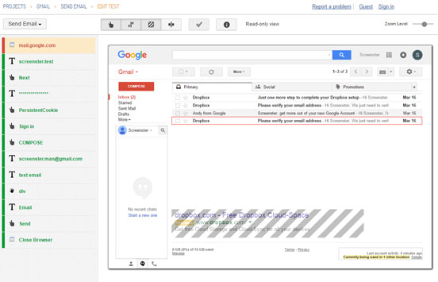

Image and screenshot comparison tools for UI testing
June 20, 2017There is a simple case for why end-to-end UI testing is impossible without automated image comparison. If you’re not using a screenshot comparison tool, your product is at risk of shipping with visual bugs which rarely go unnoticed by users. Obviously, no sane QA engineer is willing to accept this risk.
So do you automate image comparison when testing UIs? And if yes, what automation tool do you use? Is it a simple module for WebDriver — or other code-based solution — or a dedicated visual CSS regression testing tool?
Let’s look at the popular tools and platforms that QAs use to compare screenshots when testing web UIs.
In this post, we’ll find out if the functionality of these image comparison tools meets the real-life requirements of UI testing.
WebdriverCSS
WebdriverCSS is a part of WebdriverIO, which makes for a lot of neat functionality. It allows you to write scripts in JavaScript, and it’s compatible with major TDD and BDD frameworks.
One more reason to like this tool is the WebdriverCSS Adminpanel — a clean, nothing-extra-style dashboard with a slider for manual image comparison. Sure, setting up the admin panel adds overhead, but the overall experience of using the dashboard feels rewarding.
PhantomCSS
While WebdriverCSS mainly targets real browsers, there is another major option for automation screenshot comparison in headless browsers. PhantomCSS is a screenshot comparison module that works in tandem with Resemble.js and offers a visual/CSS regression testing library for PhantomJS and SlimerJS.
The drawback of PhantomCSS is it’s overhead-to-value ratio. Since the tool is not for a real browser that people use, you don’t actually test the UI that people see. On the other hand, the overhead of setting it up is comparable to that of a real browser. Due to this, there is little incentive to choose PhantomCSS over WebDriverCSS.
Resemble.js
Resemble.js was designed as an image comparison module that PhantomCSS uses to compare screenshots taken by CasperJS. Aside from this, Resemble.js can function as part of any image analysis setup. In fact, it serves as a core of other screenshot comparison tools on this list. The module offers basic image comparison functionality and a clean syntax:
Both PhantomCSS and Resemble.js are brainchildren of Huddle, and both of them have a solid developer support and top-notch documentation.
There’s one issue with Resemble, though. The tool uses a somewhat simplistic pixel matching algorithm that allows for tolerance of the number of different pixels. This is not practical for comparing screenshots of web pages where content will often shift by just a few pixels resulting in image comparison fails.
Wraith
Wraith is another solution that’s primarily targeted at headless browsers. This tool is authored by the development team of BBC News, and it enables screenshot comparison in two distinct modes:
- Capture mode — screenshot comparison across two domains (e.g. test version versus live website).
- History mode — comparing screenshots across different versions of the UI on the same domain during regression testing.
To help Wraith move beyond headless browsers, Wraith-Selenium emerged as an independent third-party project in 2014. Unfortunately, the GitHub repository of this project is inactive as of 2017.
Blink-Diff
The development team at Yahoo positions Blink-diff as a lightweight screenshot comparison tool. The solution enables testers to automate image comparison via the command line or by adding a BlinkDiff object to the project code.
Some of the notable features include cropping and block-out (i.e. ignoring particular UI regions). Besides, the tool breaks down image comparison automation into three distinct comparison modes:
- The Pixel-by-pixel mode detects all differences between the images.
- The Perceptual mode sorts out the differences that are less likely to be seen by humans.
- The Context mode detects missing and/or distorted parts of the image while accepting smaller differences.
BackstopJS
BackstopJS is a config-driven CSS testing tool that includes image comparison as one of its core features. The tool enables QAs to test responsive layouts across multiple pre-specified viewport sizes, and it offers a wide array of reporting functionality. Backstop works with CasperJS, and it seems like a neat tool for web developers who don’t mind spending some extra time writing tests.
Protractor-image-comparison
A lightweight plugin for Protractor, this tool enables testers to save and compare UI areas and full-scale screenshots on desktop and mobile. This plugin is based on ResembleJS, it uses a concept of baselines, and it targets both mobile websites and hybrid apps on mobile.
Gemini (Yandex)
Gemini’s major claim to fame is the fact that it’s from Yandex, the company that has authored the BEM methodology of CSS development.
As far as more practical aspects go, Gemini creates an impression of a solid screenshot comparison tool. It works with Selenium and it supports every major browser (including IE8+).
Just like the more advanced image comparison tools on this list, Gemini is capable of testing separate areas of the web page. Besides, the tool is able to ignore inessential differences (like rendering artifacts) which minimizes false positives. Gemini also features a dashboard module that simplifies UI testing (even though this dashboard looks rather simplistic).
Shoov
One great thing about Shoov is the slider-based dashboard that seems like a useful thing for manual examination of screenshot differences. When it comes to the automation testing, simple image comparison remains the tool’s core functionality.
Image comparison tools matrix
Let’s take another quick look at the screenshot and image comparison tools we’ve mentioned so far. Below, you can find a comparison matrix that sums up the basic features and benefits that these tools offer. We’ll exclude Resemble.JS from comparison because it’s essentially an image comparison module used by other tools (like PhantomCSS).
| Tools / Features | GUI / VIsual Dashboard | Browser type | Distinguishing features |
| WebdriverCSS | Yes | Real | Default option for WebDriver.io |
| PhantomCSS | No | Headless | |
| Wraith | No | Headless* | Comparison across domains and product versions |
| Blink-Diff | No | Real and headless | Three comparison modes: pixel-perfect, perceptual, context |
| BackstopJS | No | Headless | Smart timeouts for Progressive apps, SPAs and AJAX content |
| Protractor-image-comparison | No | Real and headless | Good Appium support |
| Gemini | Yes | Real and headless | Good cross-browser functionality, lots of plugins |
| Shoov | Yes | Real and headless | Drupal-friendly |
*Technically speaking, you can add real browser support to Wraith, but you’ll have to use an outdated module.
There’s always room for improvement…
As I’ve mentioned earlier, screenshot comparison is vital for effective UI testing — but does this mean that screenshot comparison is enough?
To give an informed answer to this question, let’s once again look at the typical changes that web pages undergo throughout their life cycle:
- The entire page, or a portion of it, will often shift by just a few pixels of whitespace. There will be no detectable difference to a human eye, yet a 100% difference in pixels.
- Most pages have dynamic content that should be excluded from comparison. Dates, usernames and third-party ads are well known examples.
- A single change such as a new logo in the header will make all new screenshots different from the baseline. For this reason, a UI regression testing tool needs to look at the site/app as a whole, not just at individual pages.
- Comparing text through rendered pixels is unreliable due to anti-aliasing.
Sure, the screenshot comparison tools on our list address things like anti-aliasing and rendering artifacts. Blink-diff’s perceptual comparison is another example of how image comparison tools tackle the some of typical challenges of UI testing.
Hand-coding your way around a dynamic UI area, on the other hand, is a more messy process. Handling a layout change that affects all of your pages is another major nuisance that adds overhead to your UI testing.
So wouldn’t it be super-nice if a visual testing tool could minimize this overhead?
As a matter of fact, there are visual testing platforms that offer a smarter way for handling the everyday challenges of UI testing. Actually, I am working with a team that’s building an integrated visual testing platform of this kind. Let’s see what it can offer.
UI testing with Screenster: moving beyond image comparison

Screenster is an intelligent cloud-based platform that you can characterise as screenshot comparison 2.0.0.
Instead of merely capturing and contrasting screenshots, it generates visual baselines of the UI complete with DOM snapshots and lists of parents for every element. Instead of making you hand-code tests or tinker with auto-generated scripts, it records UX sessions and stores them as series of editable test steps. Instead of taking days to automate a UI test suit, it takes hours.
Below, you’ll find a glimpse of the smart functionality offered by Screenster.
Simple handling of dynamic UI regions
True, most of the tools mentioned in this post offer a way of handling dynamic portions of the UI. The problem is they do it via hand-coding, and hand-coding your way around an ever-changing piece of a UI screenshot isn’t exactly a streamlined process. Also, dealing with page coordinates is a real headache when you test complex responsive layouts.
With Screenster, excluding a dynamic UI region from future comparison is as simple as a couple of mouse clicks. What’s more, the platform will detect about 99% of dynamic content automatically during the first test run.
Automatic handling of timeouts
Timeouts are another minor source of frustration, and a factor that contributes to the fragility of UI tests. For decades, hand-coded waits have been the only way to prevent UI tests from breaking whenever loading some element took two seconds longer than usual. In case with most code-based solutions, this slowed down regression test runs.
With Screenster, on the other hand, the platform will automatically determine the optimal waiting time for every test step. Yet again, a process that used to be tedious will no longer bother you.
Test creation in under 3 minutes — with no coding involved
The general philosophy with tools like Screenster is that your UI testing tool mustn’t slow you down. So if it takes you more than 5 minutes to record a simple real-life test, you’re probably using a wrong tool.
To get a glimpse of what you can expect from Screenster, check out the video below. In this clip, you’ll see that a basic test for an Ajax-heavy web application with rich UI can be recorded in under 3 minutes.
Readymade cloud infrastructure with zero overhead
Okay, so how long does it actually take you to set up an automated screenshot solution? For most teams using one of the traditional tools, spending a day or two generally sounds like a win. In case with Screenster, everything is a lot faster.
When working with Screenster, you deal with a readymade cloud solution. Sure, you’ll need to install a server, but you won’t have to tinker with dozens of separate modules and dependencies. One of the few things that comes as a separate plugin is the solution for CI support.
Sounds convincing? Give it a try!
One more thing. In contrast to using one of the 13 tools mentioned in this post, Screenster doesn’t enforce the need of learning to code. Your manual QAs and business team can master the platform on the go — it’s really this simple. Doesn’t this sound like something you should definitely try?